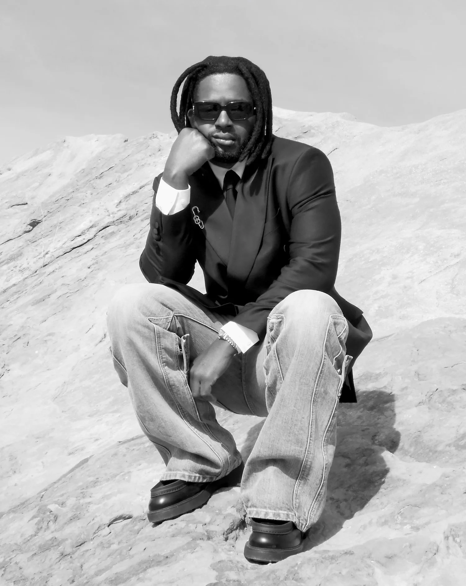

The studio
Pursuing A–Z Laudably.
Creative mastery is rarely linear. It's a puzzle whose pieces reveal themselves through study, experimentation, and collaboration. Every breakthrough uncovers new questions, pushing the pursuit forward. PAZL exists inside that tension: an insatiable curiosity to connect disciplines, refine craft, and chase discovery without end.

The founder
Fred Saint Foster
Founder, creative director
Fredrick Amponsah, known as Fred Saint Foster, moved from Ghana to the United States as a teenager and found his footing through fashion, where style became a language that crossed cultural lines. Self-taught in design and business, with an architect father's eye for clean lines, he co-founded the brand Cease & Desist.
His mix of luxury and streetwear led to work as creative director for Grammy winner Future, and to tour merchandise and stage looks for some of the biggest names in music and sport. Today the studio extends that practice into art, film, music, architecture, footwear and furniture.
Services
- 01Creative direction
- 02Art direction & cover art
- 03Fashion design & development
- 04Merchandise design & production
- 05Photography & editorial
- 06Film: commercials, music videos, trailers
- 07Wardrobe & stage design
- 08Brand collaborations
Selected clients & collaborators
Future, Lil Durk, Gunna, Kodak Black, EarthGang, J.I.D, Wizkid, Meek Mill, Megan Thee Stallion, Glorilla, Yung Miami, Lil Uzi Vert, Young Thug, Migos, Doe Boy, Yung Bans, Latto, Ski Mask the Slump God.
Lanvin, Fear of God, Reebok, BAPE, Newport, Michelob Ultra, Celsius, Amazon Music, Atlanta Hawks, Cleveland Cavaliers, Alamo Records, Santa Anna, Cease & Desist, Godspeed.
Seen on
BET Awards, Grammy Awards, Amazon Music Live, United Center Chicago, Wun World Tour, Nobody Safe Tour, Legendary Nights Tour.
Press
The FADER (Fred Saint Foster profile), The FADER (Reebok × Future), The New York Times (Lanvin Lab × Future), WWD (Future / Freebandz), Billboard (Wun World Tour), Pitchfork (Watch Dis!), Complex (Heavy Is the Crown), Complex (J.I.D × Kellogg's), Hypebeast (Deep Thoughts), PAUSE (J.I.D × Fear of God), People (Hawks × Michelob Ultra).
Contact
Let's make something matter.
studio@fsf-studio.comHave a project, partnership, or idea in mind? We'd love to hear about it. Tell us what you are making, where it will live and when it needs to exist.